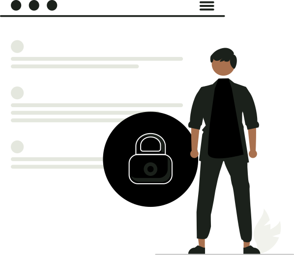

系统 · 审计
操作日志
关键操作、权限变更与登录安全。日志保留 180 天，敏感操作需双人复核。
今日操作
1,284条
+8.2%较昨日
登录次数
186次
成功 183 · 失败 34 个账号
敏感操作
24条
权限 6 · 导出 12已复核 22
异常尝试
3次
连续失败 3 次已锁定IP 10.12.9.88
审计日志
共 12 条记录| 时间 | 操作人 / 角色 | 模块 | 操作 | 对象 | IP | 结果 |
|---|
日志为只读，任何删除都会记录二次审计
敏感操作
今日需关注登录安全
最近 24 小时成功登录183 次
失败尝试3 次
锁定账号1 个 · admin
异地登录0 次

日志包含操作人、角色、对象、IP 与结果；点击“详情”查看请求级信息。